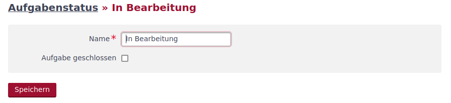
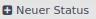
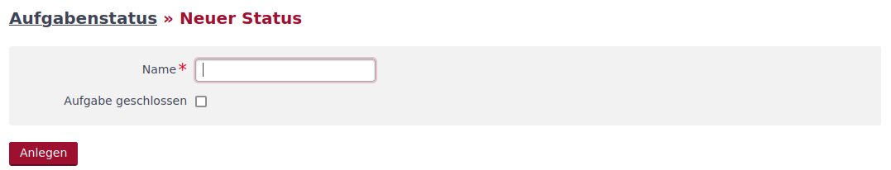
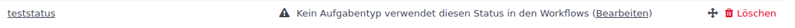
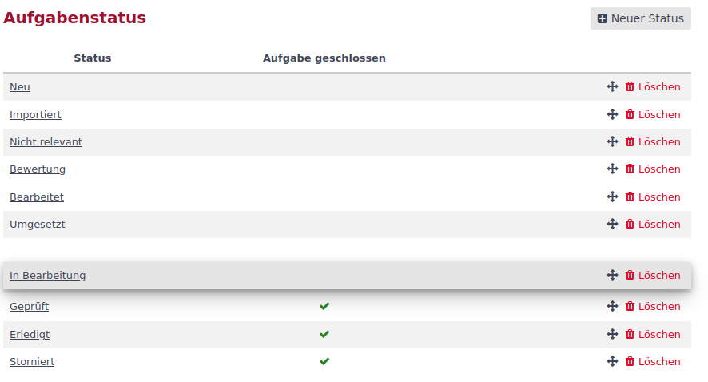

Aufgabenstatus
Der Aufgabenstatus beschreibt den aktuellen Prozessschritt im Aufgabenablauf (Workflow). Die Aufgabenstatus können im Administrationsbereich über den Menüpunkt Aufgabenstatus bearbeitet werden. Es öffnet sich eine Liste der im System gepflegten Aufgabenstatus.

In der Liste sind der Statusname sowie der Vermerk Aufgabe geschlossen dargestellt.
| Der Aufgabenstatus wird erst funktional wirksam, wenn dieser über den Workflow mit den Aufgabentypen und den Rollen verknüpft wird. |
Aufgabenstatus bearbeiten
Durch einen Klick auf den Statusnamen in der Liste, gelangt man in die Bearbeitungsmaske des gewählten Aufgabenstatus.

Der Aufgabenstatus hat nur zwei Attribute. Den Namen des Aufgabenstatus (Pflichtfeld) und die Auswahl Aufgabe geschlossen. Wird die Auswahl gesetzt, wird eine Aufgabe mit diesem Status im Standardfilter Status offen nicht angezeigt.
Mit Klick auf den Button  werden die Änderungen übernommen.
werden die Änderungen übernommen.
Neuer Aufgabenstatus
Soll ein neuer Aufgabenstatus hinzugefügt werden, geschieht dieses über den Button  im rechten oberen Bereich der Aufgabenstatusliste. Durch Klick auf den Button erscheint die aus der Bearbeitung bekannte Maske.

Der Statusname ist ein Pflichtfeld. Falls der Status nicht zu den offenen Status zählt, ist der Haken hinter Aufgabe geschlossen zu setzen.
Mit Klick auf den Button  wird der neue Status angelegt.
wird der neue Status angelegt.
Da der Status noch keinem Workflow zugeordnet ist, erscheint in der Aufgabenstatusliste folgende Meldung.

Über den Klick auf das unterstrichene (Bearbeiten) gelangt man zur Workflowbearbeitung.
Aufgabenstatus verschieben
Die Reihenfolge, in der die Status in der Anwendung gelistet werden, ist die in der Aufgabenstatusliste. Durch Klick und Halten der linken Maustaste auf das Icon  kann die Zeile mit dem Aufgabenstatus in der Liste verschoben werden.
kann die Zeile mit dem Aufgabenstatus in der Liste verschoben werden.

An der Position, an der die linke Maustaste gelöst wird, wird der Aufgabenstatus platziert.